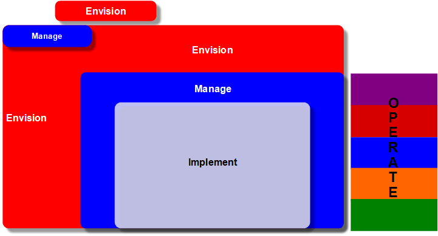

OUM |
Method Overview |
||
Method Navigation |
Current Page Navigation |
||
|
|
||||||||
Oracle is evolving the Oracle® Unified Method (OUM) to realize the vision of supporting the entire Enterprise IT lifecycle, including support for the successful implementation of every Oracle product. You can tailor OUM to support your specific project situation. With its ready-made templates, guidelines, and scalable work breakdown structure, OUM provides the programmatic tools you need to manage the risks associated with your project.
OUM provides comprehensive support for cloud solutions, with guidance to assist customers in planning their transition to the cloud, SaaS implementations and management of operational cloud environments. OUM also supports a variety of other engagement types, including Application Implementation and Software Upgrade projects as well as the complete range of technology projects including Business Intelligence (BI), Enterprise Security, WebCenter, Service-Oriented Architecture (SOA), Application Integration Architecture (AIA), Business Process Management (BPM), Enterprise Integration, and Custom Software. Detailed techniques and tool guidance is provided, including a supplemental guide related to Oracle UPK and Tutor. Refer to the What's New? page for details on the features of this release.
OUM includes four Focus Areas – Manage, Envision, Implement and Operate. OUM's Manage focus area provides a framework in which all types of projects can be planned, estimated, controlled, and completed in a consistent manner. OUM’s Envision focus area deals with development and maintenance of enterprise level IT strategy, architecture, and governance. Envision also assists in the transition from enterprise-level planning and strategy activities to the identification and initiation of specific projects. The Implement focus area provides a framework to develop and implement Oracle-based business solutions with precise development and rapid deployment. The Operate focus area spotlights how to manage and support software in production. It is aligned with the Information Technology Infrastructure (ITIL®), and describes the services provided by Oracle Managed Cloud Services (OMCS), as well as other organizations involved in providing and managed services to Oracle customers.
In order to understand the connection between the artifacts produced in the Envision focus area and how they relate directly to the tasks in the Implement focus area you should review the Envision Touch Points.
The diagram below shows how the Envision, Manage, Implement and Operate focus areas fit together to form OUM:

OUM couples the experience of Oracle's global practitioners with an extended Unified Process-based framework. It provides this collection of leading practices organized as a series of processes or workflows that can be assembled and scaled to achieve various information technology related business objectives. OUM also leverages Oracle’s intellectual capital by reusing processes, tasks, and templates from Oracle's complete portfolio of existing methods. For further reading on UP, see The Unified Software Development Process.
OUM also possesses the following properties:
You should use OUM as a guideline for performing information technology projects, but keep in mind that every project is different and that you need to adjust project activities according to each situation. Do not hesitate to add, remove, or rearrange tasks, but be sure to reflect those changes in your estimates and risk management planning.
OUM is evolving. The vision is to support the entire Enterprise IT lifecycle, including support for the successful implementation of every Oracle product. Upcoming releases of OUM will provide enhanced support for Oracle's full complement of enterprise application suites including product-suite specific materials and guidance for tailoring OUM to support various project types.
Your contributions and feedback are welcome and appreciated. Improvements to OUM continue to be made based upon the experience that Oracle acquires through its myriad interactions with users of Oracle's software products. Please contribute your thoughts, comments, ideas, and artifacts to Oracle's Global Methods team so that we may continue to improve this body of work. Contact Oracle's Global Methods team at ominfo_us@oracle.com.
OUM is built on five main principles derived from the Unified Process, the Dynamic Systems Development Method (DSDM), and Oracle's legacy methods. Those are:
For further reading on the Dynamic Systems Development Method, see DSDM: Business Focused Development.
OUM, like the Unified Process (UP) from which it has been derived, employs an iterative and incremental approach to implementing software systems. In the Unified Process, and therefore in OUM, the result of an iteration is an increment. It is important to note that the OUM definition of an increment, while consistent with UP, differs from the definition used in DSDM. For further reading on iterations and increments, see The Unified Software Development Process.
In OUM, the terms iteration and increment are defined in a way that is consistent with these concepts. An increment is the difference between the release of one iteration and the release of the next iteration. An iteration is a distinct set of activities conducted according to a devoted (iteration) plan and evaluation criteria that results in a release, either internal or external.
Rather than breaking the software implementation process into steps such as requirements, analysis, design, implement, and test; the OUM Implement focus area breaks the process into major milestones called the Lifecycle milestones. These milestones were defined by Barry Boehm and initially published in the article "Anchoring the Software Process". The milestones occur at the phase boundaries;and serve to anchor the software implementation process. For further reading on milestones, see "Anchoring the Software Process."
Each OUM Implement phase may also be broken down into several iterations. These iterations represent the minor milestones of the project. OUM suggests nominal iteration counts for each phase, but the project team must develop the actual iteration plan based upon the project's characteristics. The total number of iterations in a project may range from as few as 4 to more than 12, but is generally in the range of 4 to 10.
Remember that Parkinson’s Law states that “Work grows to fill available time.” Therefore, OUM recommends planning iterations to be 2 to 6 weeks in length, with a bias toward shorter lengths. The optimum length for a given iteration is based on the ability of the project team to segment or partition the work. This is normally a factor of the solution being implemented and the structure of the project team. Project teams less experienced with an iterative approach tend to be biased toward longer iterations because they doubt their ability to deliver value in shorter periods. This tendency should be resisted. The value of an iterative approach is to focus the project team on specific objectives and addressing the most important risks within each iteration. As such, iterations should almost never exceed 7 or 8 weeks and typically shorter is better.
An iteration can be thought of as a mini-project that runs through a group of tasks and activities. These activities perform a complete requirements-analysis-design-implementation-test cycle to produce an incremental improvement to the project's active outputs – that is, an increment. Each iteration also includes planning, at the front, and preparation for release, at the end.
As illustrated in the OUM Implement overview diagram, early iterations emphasize requirements-analysis-design. These may also include implementation-test activities (of a prototype, for example). In the Inception and Elaboration phases an iteration is most likely to result in an incremental improvement to models, documentation, and prototypes. Later iterations have a greater emphasis on implementation and test, but will also likely include some refinement of the requirements-analysis-design outputs. Therefore, during the Construction phase, an iteration will more likely result in an internal release of software.
OUM’s iterative and incremental approach means that projects will be managed somewhat differently. OUM proposes “controlled iterations,” meaning that the content and objectives of each iteration are planned early in the project and that the plan is adhered to throughout the project. The project team determines the content of the iterations by identifying project risks and addressing the highest priority risks in the early iterations.
OUM provides extensive guidance related to managing such projects as part of the Manage focus area. Generally speaking, however, at the beginning of an OUM project, a high-level Project Workplan is created. This workplan documents the phases, iterations, and other significant milestones of the project. The project manager uses the high-level plan as a framework for planning successive iterations that will each result in an increment of work. Just prior to the beginning of each iteration, the project manager develops the detailed iteration plan that will be used to manage that iteration.
Typically, each iteration is related to one or more software components and also addresses the most significant risks. The components can be defined by business process, use case, or other groupings related to the software being implemented. During the iteration, each task and component is completed to the level agreed to at the start of the iteration. Project teams may choose to implement component by component, to develop parts of the requirements in one iteration and complete them in another, or to use a mixed approach. Completed components are continuously integrated into systems and subsystems through the iterations.
Rapid development techniques such as workshops and prototyping are frequently employed. User involvement is encouraged early in the process and throughout the project. Requirements are not frozen, but rather changes are handled through the prioritized requirements (MoSCoW) list developed early in the process. As with other Oracle method approaches, requirement changes that results in changes to the overall scope, or that fall outside of the project scope, are addressed by the normal change control process that includes customer sign-off.
Finally, it is important to note that an iterative approach does not imply that requirements are out of control or are in a state of flux. It has been shown time and again, that properly planned and executed iterations allow for the most effective control of the changing requirements that are an inevitable, yet important part of all but the very simplest software implementation projects.
Business processes and use cases are used as the primary artifacts for establishing the desired behavior of the system and for communicating this behavior among the stakeholders.
OUM projects are able to document requirements through business process models, through use cases, and through written supplemental and quality of service requirements. OUM guidance helps implementers to understand where each technique is appropriate and how they fit together.
Business processes modeling helps stakeholders and implementers to understand the business processes of an organization, and look at the business requirements that are addressed by a particular business process.To complement business process models, use case models and use cases;may be used to:
Often business process models for predefined solutions exist and contain some form or description of how the user interacts with the system or how a system interacts with another system. Where these business process models already exist, they should be reviewed as a means of gathering business requirements. The need for additional use case modeling would depend on how well the business process models have captured the requirements of the business. Use cases become particularly important where there is a significant gap between the functionality required by the business and the functionality provided by the predefined solution or software product that is being employed. OUM proposes that implementers develop only the set of models and artifacts required to understand and document requirements and trace those requirements through the implementation lifecycle.
As the project progresses and where the need to develop use cases arises, the use cases are analyzed and the system is designed and implemented to meet the requirements captured in the use cases. The implemented components are tested to verify that they provide the business benefit described by the use cases. All of the models (Use Case Model, Analysis Model, Design Model, Architectural Implementation, and Performance Test Transaction Models) are related to each other through trace dependencies. Use cases are prioritized to:
In the context of the software lifecycle, architecture-centric means that the system’s architecture is used as a primary artifact for conceptualizing, constructing, managing and evolving the system that is being implemented.
Architecture refers to the set of significant decisions about the organization of a software system, the selection of the structural elements and their interfaces by which the system is composed, together with their behavior as specified in the collaboration among those elements, the composition of these structural and behavioral elements into progressively larger subsystems, and the architectural style that guides this organization.
The architecture is the collection of models that describe the system. It contains the most significant static and dynamic aspects, and an executable architecture is the product of successive refinements. This is usually accomplished in the form of a models and prototypes, and is developed before full-scale development starts. It contains the organization of the software system to build with structural elements and interfaces, and their behavior.
OUM is architecture-centric from the beginning of the project. An architectural baseline is defined in the initial phases and expanded in the subsequent phases to produce high quality software systems in a cost effective way. The architectural baseline provides an infrastructure, often a framework that supports continuously adding or replacing components through the iterations to minimize the effect on the rest of the application. For further reading on architecture-centric, see The Unified Software Development Process.
Traditionally, projects have been focused on addressing the contents of a requirements document or rigorously conforming to an existing set of artifacts. Often, especially where iterative and incremental techniques have not been employed, these requirements may be inaccurate, the previous deliverables may be flawed, or the business needs may have changed since the start of the project. Fitness for business purpose, derived from the Dynamic Systems Development Method (DSDM) framework, refers to the focus of delivering necessary functionality within a required timebox. The solution can be more rigorously engineered later, if such an approach is acceptable. Our collective experience shows that applying fit-for-purpose criteria, rather than tight adherence to requirements specifications, results in an information system that more closely aligns to the needs of the business.
In OUM, this principle is extended to refer to the execution of the method processes themselves. Project managers and practitioners are encouraged to scale OUM to be fit-for-purpose for a given situation. It is rarely appropriate to execute every activity within OUM. OUM provides guidance for determining the core set of activities to be executed, the level of detail targeted in those activities and their associated tasks, and the frequency and type of end user deliverables. The Project Workplan should be developed from this core. The plan should then be scaled up, rather than tailored down, to the level of discipline appropriate to the identified risks and requirements. Even at the task level, models and other outputs should be completed only to the level of detail required for them to be fit-for-purpose within the current iteration or, at the project level, to suit the business needs of the enterprise and to align with the contractual obligations that govern the project.
OUM provides well defined templates for many of its tasks. Use of these templates is optional as determined by the context of the project. Task outputs can easily be a model in a repository, a prototype, a checklist, a set of application code, or, in situations where a high degree of agility is necessary, simply the tacit knowledge contained in the brain of an analyst or practitioner. For further reading on agility, see Balancing Agility and Discipline: A Guide for the Perplexed.
A key focus of each iteration in OUM is to attack and reduce the most significant project risks. This helps the project team address the most critical risks as early as possible in the project lifecycle.
OUM enables projects to clearly define business scope as well as the need to create architectural models of the enterprise. This planning results in tighter scope control, more accurate business understanding, and a firm foundation to align with customer expectations.
By combining activities and tasks in different ways, OUM can be applied to many types of information technology software development and implementation projects.
Seasoned information technology practitioners representing years of experience have contributed their knowledge to OUM. Project teams can take advantage of this experience by leveraging these leading practices along with industry standards.
OUM subscribes to an iterative approach that incorporates testing and validation throughout the lifecycle, rather than testing for quality only at the end of the project.
OUM facilitates improved control of project expenses by using a flexible work breakdown structure that allows you to perform only necessary tasks.
Implementing an iterative, broadly applicable method mitigates requirements mismatch. A key focus of each iteration in OUM is to identify and reduce the most significant project risks. This allows for the most critical risks to be addressed as early as possible in the project lifecycle, which results in a measurable reduction of schedule and budget risks.
OUM has several key concepts and significant milestones that are used to manage the implementation cycle. These key concepts and milestones are demonstrated in the Microsoft Project OUM Project Workplan. This example workplan provides a template for the partitions, phases, processes, milestones, and concepts used in an OUM project.
This section provides a brief overview of the following concepts and significant milestones used to manage an OUM project:
The functionality that is targeted to be implemented within a project may be split into smaller pieces, known as partitions that are then implemented in parallel or serially depending on project-specific factors. Partitioning is done to break down the complexity of a system, reduce risks, provide an earlier return on investment or business value or inhibit scope creep on a project.
These partitions (sometimes also known as subsystems) may be implemented using the same approach or a different approach, depending on project-specific factors. A partition is one defined part of the total functionality that will be developed in a project. If the functionality is split into partitions, then each partition is developed in a number of iterations, or even as a separate OUM “sub-project” with its own set of OUM phases and iterations.
When defining partitions, it is important to consider the dependencies between the partitions. When splitting the total functionality into partitions, look for high cohesion within a partition and low coupling between partitions.
Projects based on OUM are carried out in an iterative fashion. Each iteration is concluded by the release of an executable product or set of artifacts, or both, that may be a subset of the complete vision, but is useful from some engineering or user perspective. Iterations in the early phases of OUM typically produce project models or documentation, though prototypes may also be involved. Iterations in the later phases of OUM typically produce working software, ready for test or production.
The OUM definition of an iteration is an increment. At the end of each iteration, the active set of outputs or artifacts are released to form the current baseline. A release is therefore defined as a relatively complete and consistent set of artifacts – possibly, but not necessarily including a software build – delivered to an internal or external user. An internal release is used only by the implementation organization, as part of a milestone, or for a demonstration to users. An external release is delivered to the end users.
A release is not necessarily a complete product, but can just be one step along the way, with its usefulness measured only from an engineering perspective. Releases act as a forcing function that drives the implementation team to get closure at regular intervals, avoiding the "90% done, 90% remaining" syndrome.
At each iteration, artifacts are updated and released. It is said that this is a bit like "growing" software. Instead of developing artifacts one after another in a pipeline fashion, they are evolving across the cycle, although at different rates.
Iteration groups represent a subset of the requirements of a system – or of a partition – that have been grouped using four factors – Risk, Complexity, Priority, and Dependency. Iteration groups are then used to break down the work to allow it to be completed iteratively.
During analysis, we can and should break the requirements functionally into subsystems. However, a functional break down does not always provide the correct grouping to define increments. It is preferable to define prioritized groups of functionality based on the factors mentioned above, so that the highest priority, riskiest, most complex, etc. work is done early in a project.
Like partitioning, the circumstances on each project dictates the prioritization approach to be taken for the project. In some cases, the most complex items will be developed first. In other cases, the team will decide to first implement functionality that demonstrates certain capabilities that require user feedback. In still other cases, the iteration groups will be developed using some combination of these factors.
In OUM, tasks are grouped into Activities. Activities do not cross phases. They occur as a group of related tasks within the phase that result in the completion of a substantial milestone or deliverable. Activities then are spread within the project phases according to the time and ordering where they occur during the life of the project.
One example would be all of the tasks that relate to gathering business requirements. Tasks from one process and one from another process are grouped into an Activity called Gather Business Requirements.
In OUM, the output of a task or activity is called a work product or simply output to eliminate the risk of having method deliverables confused with contractual deliverables. Contractual deliverables are specifically referenced in the contract and often have a payment schedule associated with their acceptance. Contractual deliverables may be method outputs, but they may also reference additional deliverables not documented by the method.
Not every task referenced in the method material is required for a given project. The required tasks are based on specific project scope. In this case, the "optional" tasks are part of the OUM method material, but are not included in the Project Workplan.
Critical success factors may affect the selection of a project service. The following are typical critical success factors and their impact on the success of the implementation
Reuse is almost self-explanatory, and is a very simple but general concept and can be summed up as "not reinventing the wheel". All phases should make use of reusing intellectual capital (IC). To make sure that Oracle is taking advantage of past projects and capturing the best from current projects, project and program managers should:
Even though it makes sense to consider reusable assets during each task, it is probably more appropriate to create a task to evaluate any potential assets at the start and end of each process or phase. The assessment of the reuse potential of assets in the phase or process should be recorded in the Reuse Plan. A proposal should be created for reuse asset development (Reuse Packaging Proposal) for any candidate reuse assets that includes the following information:
The project reuse coordinator is responsible for executing this task as well as for developing the Reuse Packaging Proposal(s).
For an asset to be easily reusable, it must adhere to certain standards. Documents should adhere to a standard composition and make use of common elements and project-specific variables. Code should adhere to the Oracle coding standards for the appropriate tool or language and perhaps fit into a technical or application framework (for example, HeadStart for Applications). Some of these standards exist formally, but most exist informally or not at all. Each project will need to develop these standards to make sure that assets are designed from the outset for maximum reuse
Please review the Bibliography page for further reading and information.

Copyright © 2006, 2016, Oracle and/or its affiliates. All rights reserved.